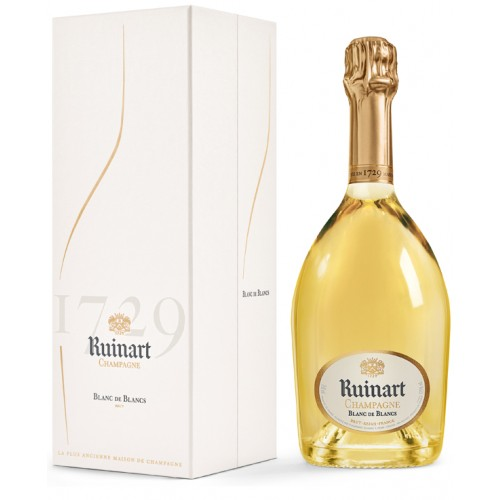
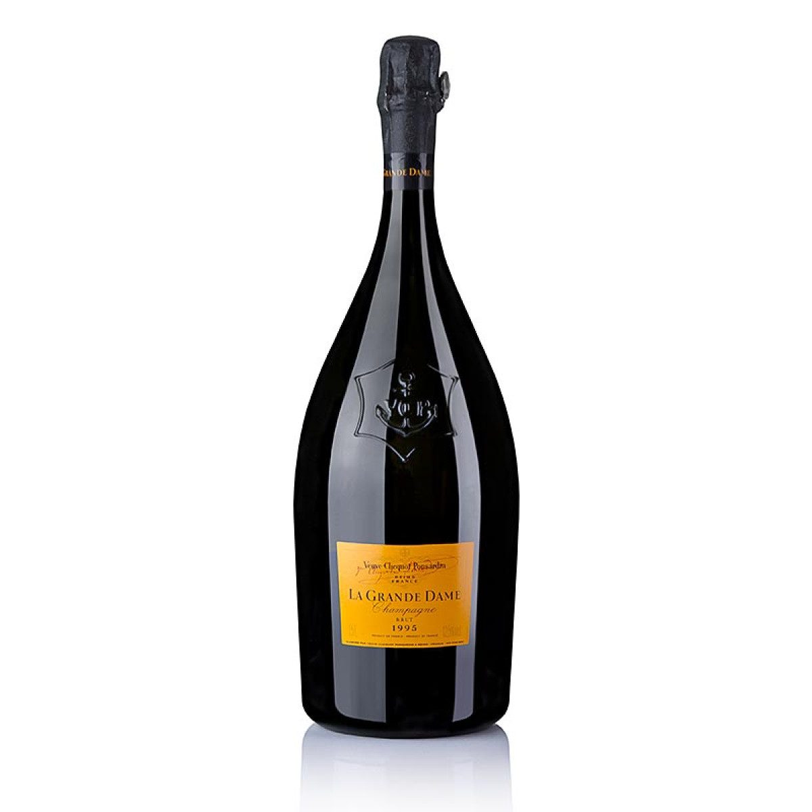
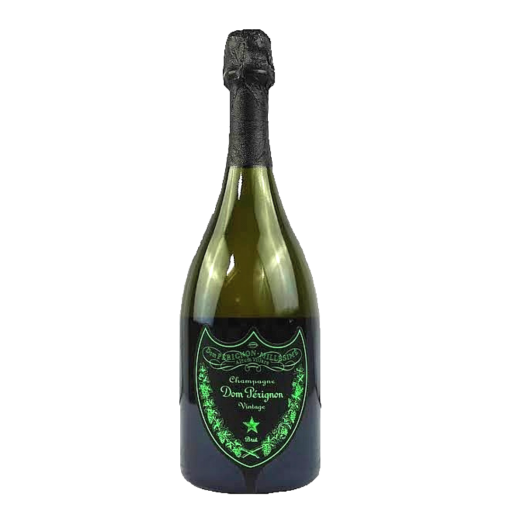

menu
- Vin Rouge
- Vin blanc
- Vin Rosé
- Champagne
Luxe, Calme et Volupté Clos des Centenaires
Plongez dans l'univers envoûtant du vin rouge "Luxe, Calme et Volupté" du Clos des Centenaires, une création d'exception qui transcende le temps et l'espace. Capturant l'essence même de la quiétude et du raffinement, ce vin incarne l'art subtil de la dégustation dans toute sa splendeur.
Un nez dominé par les fruits des bois, et les épices douces. La bouche est onctueuse mais sans lourdeur, avec une finale sur des tanins ciselés.
LUX CARITATIS ABBAYE SAINTE-MADELEINE DU BARROUX

La pépite des pépites de l’abbaye du Barroux. La belle robe rubis du vin rouge «Lux Caritatis» en dit déjà long sur le reste. Ensuite vient le nez avec de délicieuses notes de fruits noirs et de vanille ! Enfin, ce fruit noir revient en bouche accompagné de belles notes de brioche. Jean-Michel Deluc, ancien sommelier du Ritz lui a accordé la note de 18/20. Jeb Dunnuck, ce fameux critique de vin américain spécialiste du Rhône, lui a donné la note de 91/100 ! Ce vin est issu des meilleures parcelles d’un des vignoble les plus vieux de France. Il fut planté par le Pape Clément V au XIV° siècle ! Alors, on goûte ce Lux de luxe ?
Champagne Ruinart Blanc de Blancs - Coffret Luxe (75cl)

Champagne Ruinart Blanc de Blancs : D'une grande puissance aromatique, Ruinart Blanc de Blancs a la pureté intacte des cépages Chardonnay dont il est issu à 100%. S'y concentrent principalement les Premiers Crus de la Côte des Blancs et de la Montagne de Reims.
Le nez est intensément fruité. Y fleurissent les agrumes (citron, cédrat…) et les fruits exotiques (ananas, fruit de la passion…). Viennent ensuite des touches de fleurs (jasmin) et de fruits charnus (pêche blanche, baie rose).
Précis, net, le vin développe en bouche un équilibre subtil entre rondeur et souplesse.
La Coste - Le Blanc

Frais et fruité, Le Blanc de La Coste se dégustera à l'apéritif avec des toasts de caviar d'aubergines, avec un wok de légumes croquants, un tartare de Saint-Jacques aux agrumes et pomme Granny et également avec vos plateaux de fromages.
Puech Theyron rosé la bouteille 75 cl
CHÂTEAU D’ESCLANS GARRUS 2021

Décrit comme « l'essence des vignes centenaires », ce rosé corsé singulier provient d'un seul vignoble des Côtes de Provence. La fermentation et l’élevage ont eu lieu en fûts de chêne français. Le millésime 2021, puissant et élégant, surprendra les connaisseurs de rosés raffinés.
Avec une finale et une texture onctueuses, ainsi que des notes riches et épicées, ce vin propose un bel équilibre de fruits mûrs, de chêne de qualité et de fraîcheur. Il possède un joli potentiel de vieillissement.
VEUVE CLIQUOT - La Grande Dame - 1995

Découvrez une œuvre d'art enchanteresse dans chaque flûte de Champagne La Grande Dame 1995. Témoin silencieux d'une année exceptionnelle, ce champagne incarne l'essence même de l'élégance intemporelle. Méticuleusement élaboré dans les caves les plus prestigieuses, ce millésime rare célèbre la quintessence du terroir et le savoir-faire inégalé de la Maison.
Champagne Dom Pérignon - Vintage - Brut

Plongez au cœur de l'excellence avec le Champagne Dom Pérignon Vintage Brut, une création prestigieuse qui incarne l'alliance parfaite entre l'histoire séculaire de la Maison et l'expression unique de chaque millésime. Témoin de l'évolution gracieuse du temps, ce champagne incarne l'essence même de la finesse et de l'élégance.